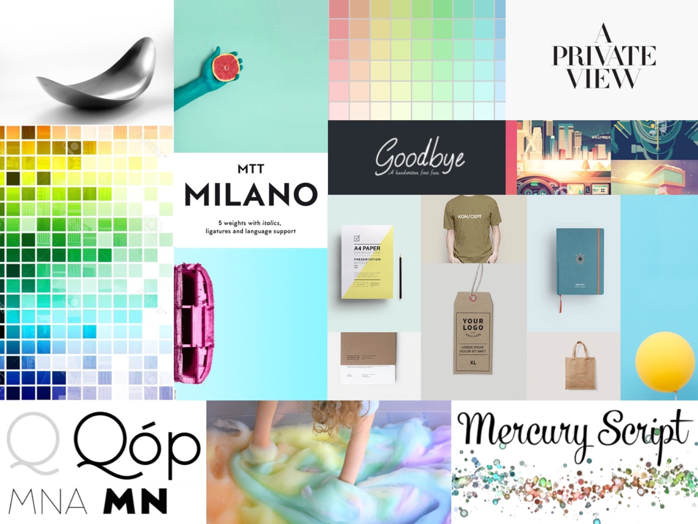
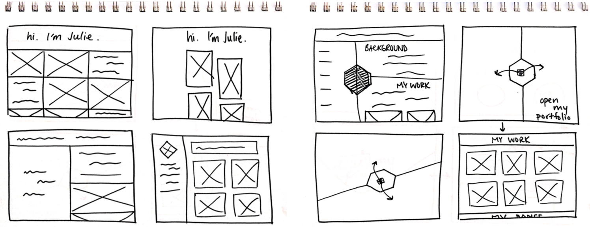
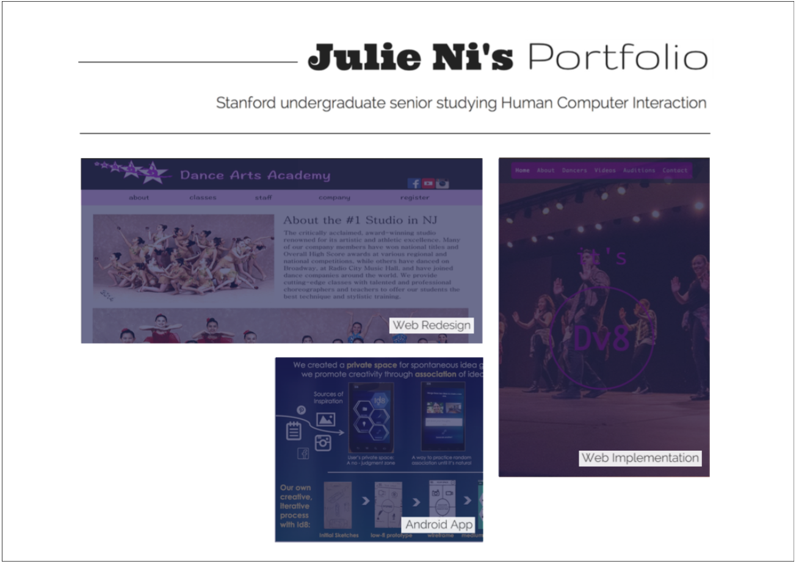
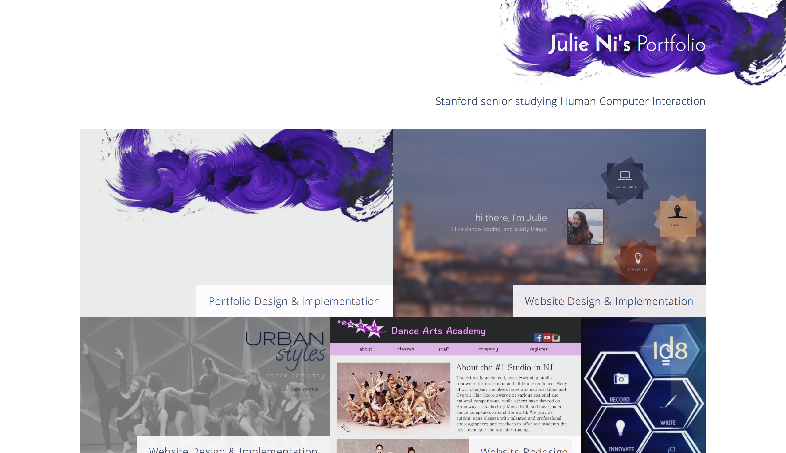

This is my design process for creating an online portfolio to showcase my past design projects. It was executed in conjunction with Stanford's CS247 course - Interaction Design Studio.
Gathering Inspiration
I wanted to create a site combining both vibrancy and professionalism, so I started by creating a moodboard. Inspired by structure and color, I searched for geometric shapes and images with expressive bursts of color.
Getting Ideas On Paper
Now it was time to create a rough outline of varied thumbnails. The goal was to create as many ideas as I could, to explore different designs in parallel to encourage breadth and variety. Below is only a small selection of my sketches.
From Breadth to Depth
Out of my pool of sketched ideas, I selected three that I liked to expand on and refine into wireframes. Fleshing out details of three separate ideas would keep me exploring new ideas and prevent me from staying too narrow minded. It's important not to get married and attached to one idea. Here were two of these three ideas.

Refining Details
I picked the one my gut was telling me to, and I continued to revise, edit, refine, change the details in Affinity Designer (because Photoshop isn't on my college student budget). It needed some color and a change in typography, but I liked the structured chaos that was a masonry grid.

Final Iteration
Again, the revised version needed another iteration. I made a pixel perfect mock, removing space between the gridded elements and adding padding to the labels, to create space throughout the site. It looked too cramped otherwise. I enlarged the font-size of the body copy to allow for better readability, and I used Masonry's JavaScript library to achieve the grid effect in the final implementation.
